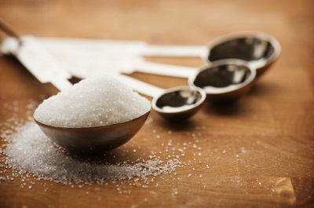

5. Cooking
The recipe calls for “3 tablespoons” of salt. You only have a teaspoon or a soup spoon. The recipe calls for “2 cups,” but you only have a quarter cup measuring tool and a half cup measuring tool. How much adds up to “2 ”? You may know the answer.
But that’s because you understand math, fractions, and conversions.

Task: Bake a cake :)
6. Driving
Operating a car or motorcycle is ultimately nothing but a series of calculations viz., How many kilometers needed to reach the destination? How much petrol in the car? How many kilometers per hour am I able to drive? How many kilometers per liter does my car get? Oh no, I’ve hit a traffic jam, and now my pace has slowed, am I still going to make it to work on time?
All of these questions are extremely easily answered with basic math skills.
Task: Calculate the speed of the school bus by using the distance and time of travel.